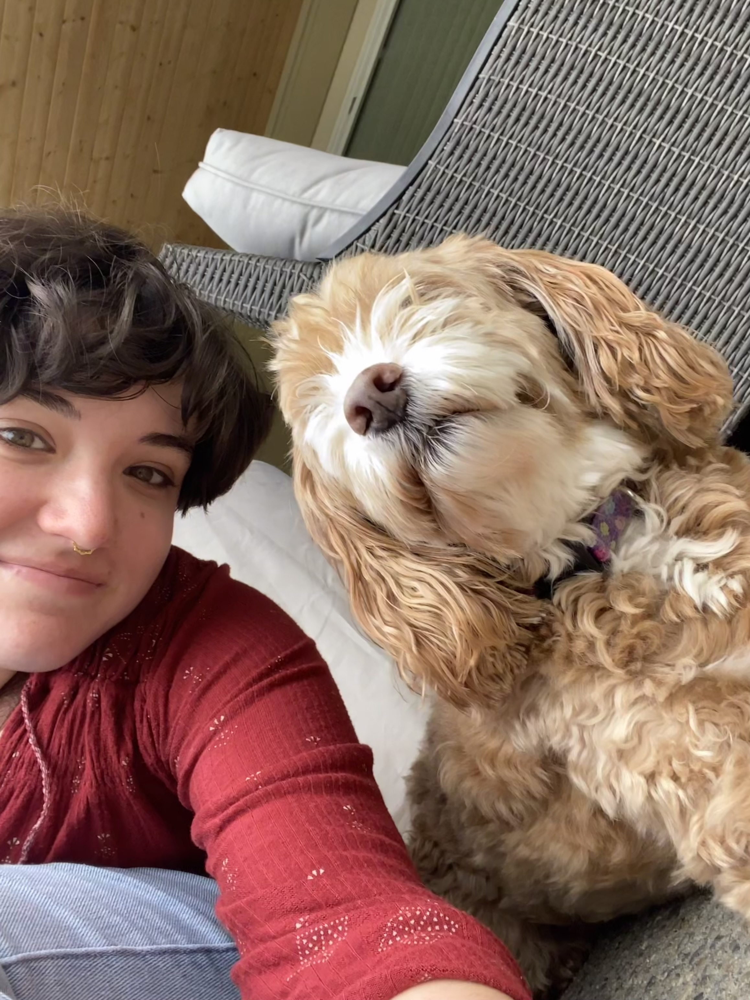

Who am I?

Hi! I am a fourth-year student at Western Washington University studying computer science and linguistics. I spend my time working on classwork and research. I am especially interested in language revitalization, language learning/education, all types of programming (especially web design), and educational technology. In my free time, I like to make jewelry, play guitar, and skate.
I hope to one day work in language revitalization or with an edtech company! I am working on a flashcard website that I would like to expand as an always-free educational resource aimed at language learning but available to anyone!
Who am I?
Hi! I am a fourth-year student at Western Washington University studying computer science and linguistics. I spend my time working on classwork and research. I am especially interested in language revitalization, language learning/education, all types of programming (especially web design), and educational technology. In my free time, I like to make jewelry, play guitar, and skate.
I hope to one day work in language revitalization or with an edtech company! I am working on a flashcard website that I would like to expand as an always-free educational resource aimed at language learning but available to anyone!
What do I do?
Research
- EvaCun2025
- DARLing Lab - Transducer team
- KIND Lab - You&I game
- SIGSE TS 2027
- MedAI group
Through my research experience, I have developed an interest and passion for educational technology, especially in the field of language revitalization. I love being able to blend my linguistics and CS knowledge, and put them to use for something meaningful!
Work Experience
- CPSD ITS Intern - Summer 2024 and 2025
In this position, I got the chance to supplement my education with hands-on IT experience. I hadn't worked with hardware before, so it helped me to round out my skills and learn about other parts of computer science. This position was also my first introduction to scripting.
Personal Projects
- Doma - flashcard website for language learning (link)
My main personal project, which I work on infrequently when I have time, is a flashcard website aimed at language learners. The website is a work in progress, with some long-term goals that I hope to achieve when I have the knowledge and time! I want to implement more games and practice methods, including matching games and some vocab-specific games. I hope to make this a real, usable, and always-free resource that people can use one day!
- SongGuess - a game inspired by games like Wordle and Heardle (link)
This game interacts with Spotify's API to pull a random playlist from a user's library, then pull a song at random from that playlist. The player is then given clues to help them guess the song that has been selected in 7 or less guesses. Give it a try to find out more!
Research →
- EvaCun2025
- DARLing Lab - Transducer team
- KIND Lab - You&I game
- SIGSE TS 2027
- MedAI group
Work Experience
- CPSD ITS Intern - Summer 2024 and 2025
In this position, I got the chance to supplement my education with hands-on IT experience. I hadn't worked with hardware before, so it helped me to round out my skills and learn about other parts of computer science. This position was also my first introduction to scripting.